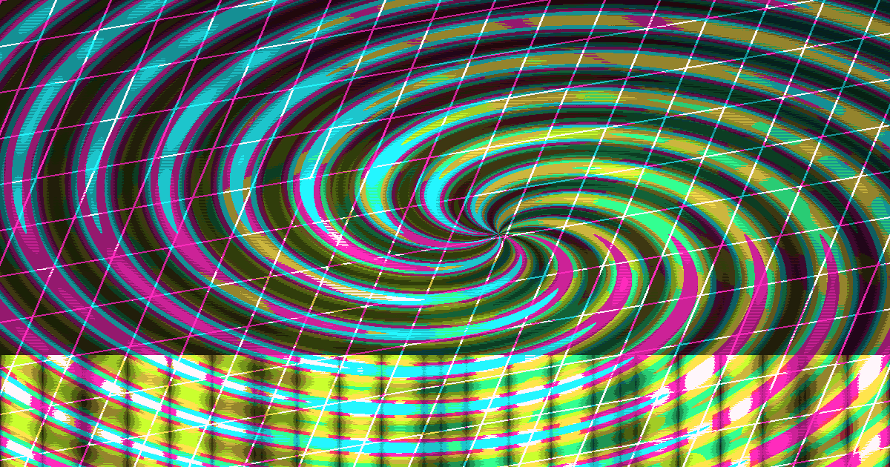

basic.rb
A wireframe cube that bends with amplitude and FFT data.
vizcore start examples/basic.rb
Ruby DSL / Audio Analysis / Browser Renderer
Vizcore connects scene definitions, FFT analysis, beat detection, MIDI control, and WebSocket streaming into one Ruby-first workflow for live visuals.
Signal Chain
Analyze microphones, WAV, MP3, FLAC, dummy sources, and MIDI events, then stream amplitude, frequency bands, BPM, beats, and scene data into the browser renderer.

Scene DSL
Define layers, shaders, transitions, and audio mappings with a Ruby DSL. Connect peaks, low-end pressure, high-frequency motion, and beat counts directly to visual parameters.
Vizcore.define do
scene :drop do
layer :bg do
shader :kaleidoscope
effect :glitch
map frequency_band(:low) => :rotation_speed
map frequency_band(:high) => :effect_intensity
end
layer :storm do
type :particle_field
count 9000
blend :add
map amplitude => :speed
map beat? => :flash
end
end
endShow Files
Start with a wireframe cube, beat-synced drops, file playback, MIDI switching, and custom GLSL scenes built for pre-show testing.
A wireframe cube that bends with amplitude and FFT data.
vizcore start examples/basic.rb
A beat-counted transition from intro into drop.
vizcore start examples/intro_drop.rb
Layered rings, grid, particles, wireframe, and glitch energy.
vizcore start examples/complex_audio_showcase.rb --audio-source file
Install
Install PortAudio and ffmpeg on macOS, or libportaudio and ffmpeg on Linux, then add the gem. fftw3 is optional and speeds up FFT analysis when it is available.
gem install vizcore
vizcore start examples/basic.rb
# macOS
brew install portaudio ffmpeg
brew install fftw
# Ubuntu / Debian
sudo apt install -y libportaudio2 libportaudio-dev ffmpeg
sudo apt install -y libfftw3-dev